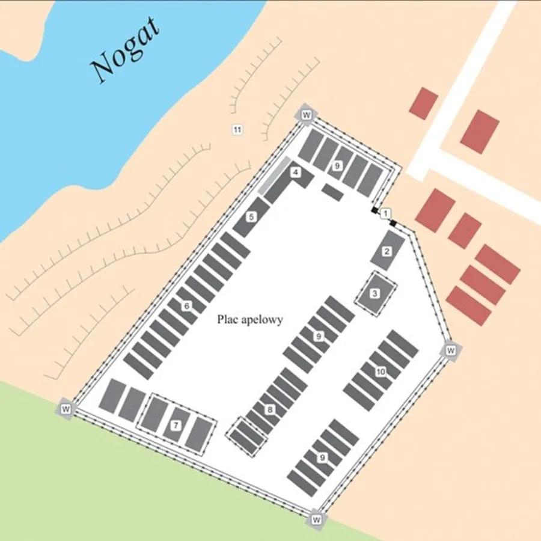
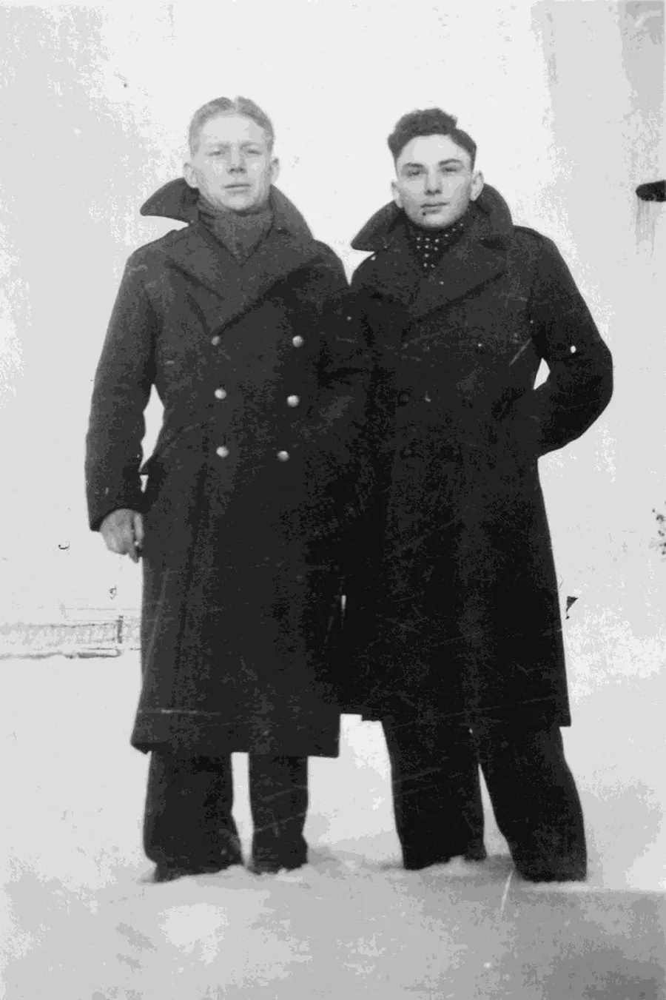
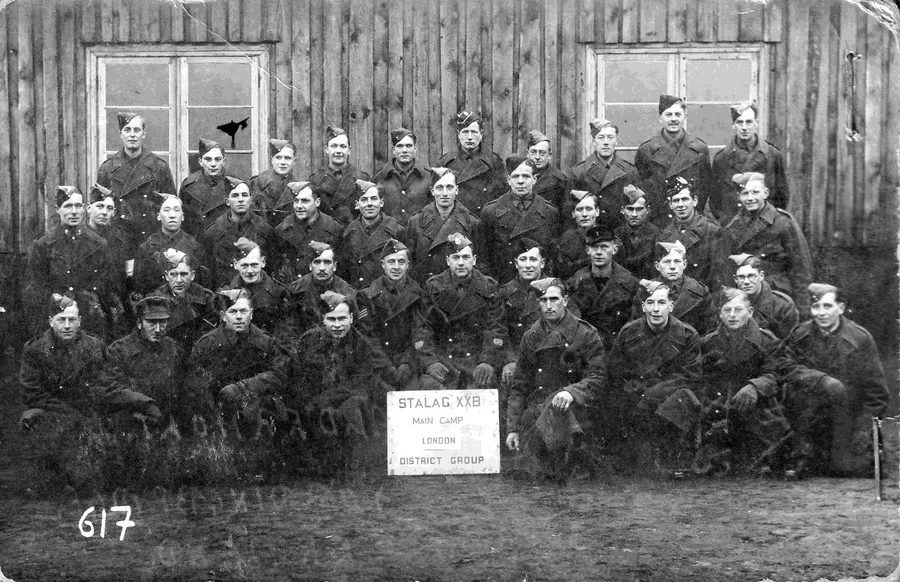
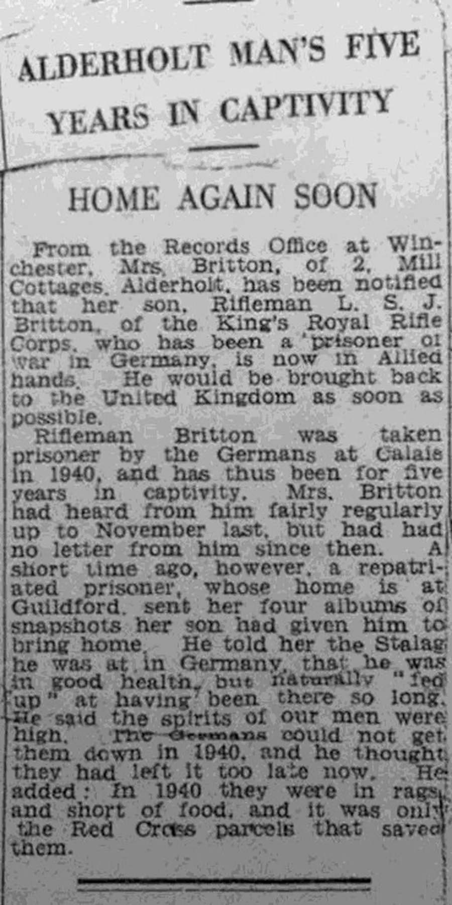
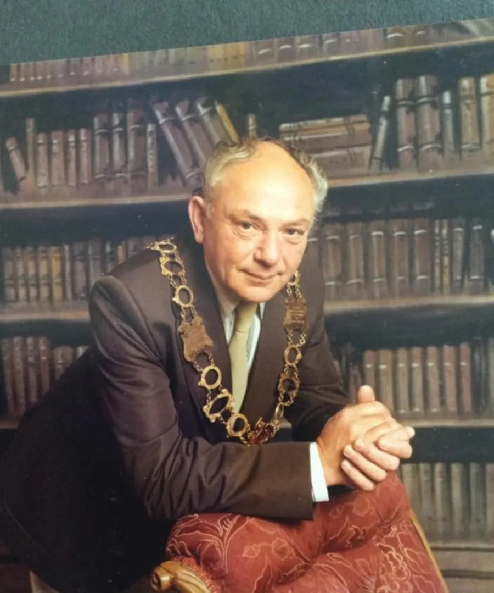
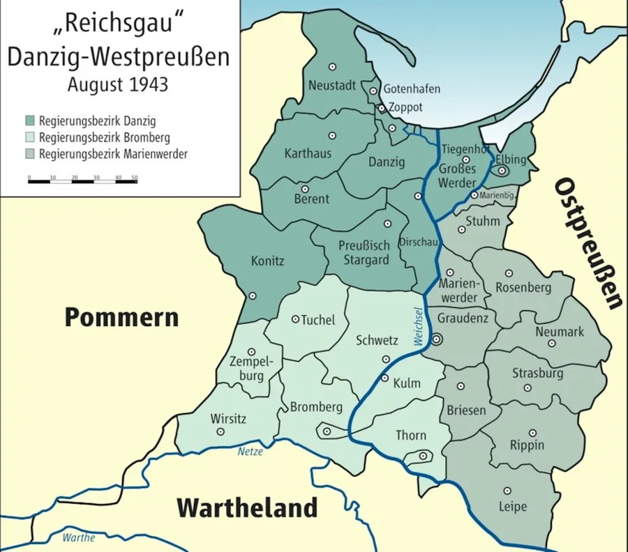
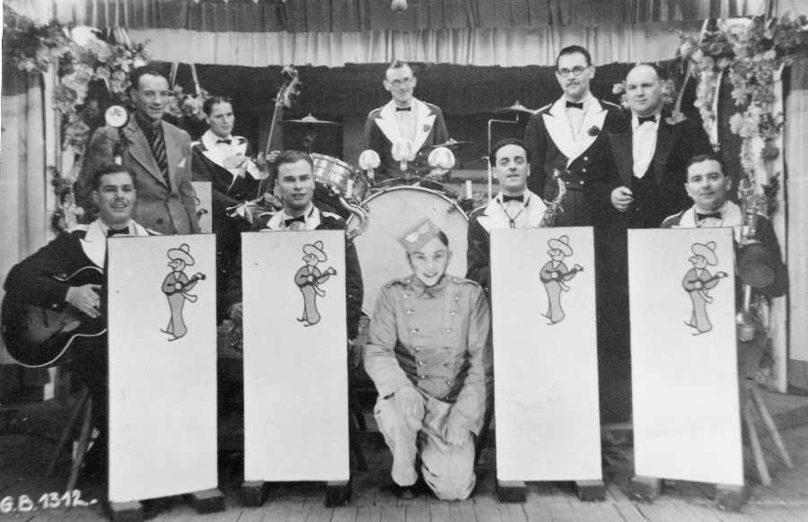
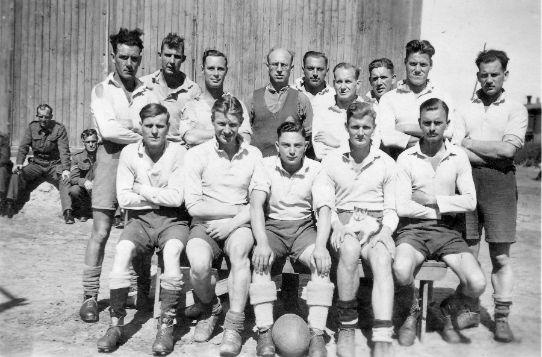
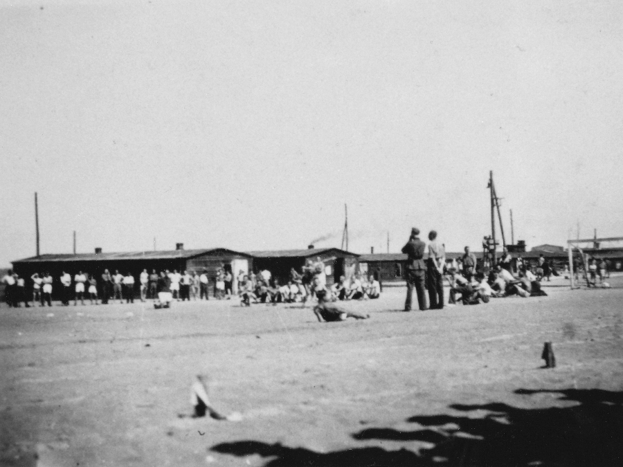
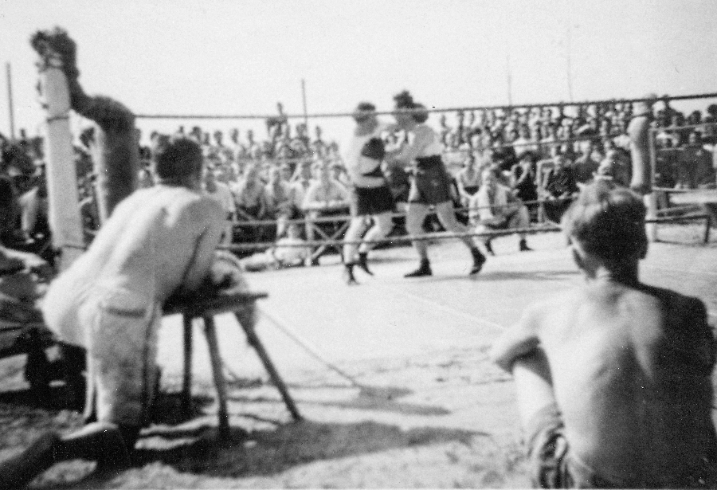

Leslie Sidney John Britton — The War Years
by Adrian King

Leslie Sidney John Britton (1920–2004) was born when the family were living at 2 Mill Cottages in Alderholt. His father Thomas Britton (1860–1931) was a travelling salesman and his mother Sarah Jane Britton (1879–1965) a midwife. Leslie had an older brother Thomas Edward Augustus Britton (1910-1994).
Leslie would have been one of the children who lived on Monkey Island named probably because of the number of children — thirteen — that used to live in the cottages at the mill. These were children from the Pople, Britton, Thorne, Bailey and Thomas families. He attended Alderholt village school.
He was still young when his father died in 1931 leaving his mother to bring up the family alone. Teenage Leslie was a fruit picker.
He enlisted in the Kings Royal Rifle Corps 31st Division on 11th April 1938 when he was nearly eighteen. One of the reasons being that he liked the black buttons which meant no polishing. He was Rifleman (RFN) Leslie Sidney John Britton Service No. 6846139.
Leslie was slightly injured when he was captured by the Germans on 23rd May 1940 at Calais and marched across France and Germany to prison camps in West Prussia.

Escapes
The First Attempt
Leslie writes
“In July 1940 I escaped alone from Camp 13A, Thorn, Poland by walking past a police post manned by two British NCO’s, with a working party they were checking out. I was recaptured four days later by a forestry patrol. Not fit due to the long march across France. No punishment due to bad organisation.”
The Second Attempt
“In Nov 1943 I escaped from a farm at Gross Waplitz (Pl Waplewo Wielkie). I had a British overcoat and slacks over my civilian clothes and with a shovel over my shoulder I walked past one guard as though I had been given a job by the other guard. I jumped a goods train and was recaptured by Schanters* and a German policeman at a small station somewhere in West Prussia whilst attempting to find out the name of the station. Twenty-one days sharp arrest. I had twenty-one days in the cell, solitary.”
*Schanters (Shunters?) were probably railway yard workers.
The Third Attempt — Success.

Picture courtesy Carol Mussell.
“On 24th Jan 1945 marched away by Germans from Stalag XX-B to escape the Russian Advance. On the following day 25th Jan, escaped from line of march. Met some German civilian evacuees and managed to steal some civilian clothes with my [comrade] David 'Blondie' George Bloor No. 6346981. Hid at Dirschau (Pl. Tczew) in West Prussia awaiting Russian Advance. Heard firing reach the River Vistula and our spirits sank when we heard it fade away in the distance.
Walked three days and then hearing of advance on Butow (Pl. Bytów) started to make our way there in the stolen civilian clothes. Arrived at Berent, West Prussia (Pl. Kościerzyna) 1st March 1945. Heard of Russian soldiers heading our way. Hid in evacuated POW working camp and Polish houses. Communicated with Russians 8th March 1945 wearing uniforms that the lads in the POW working camp had given us. Met another escapee in Berent, Leslie George Baynes Service No. S/153310.
With me and my comrade now.”
Leslie mentioned other matters that happened during his time in captivity
“On 14th Aug 1943 I was charged with my comrade David 'Blondie' George Bloor No. 6346981 with urging my comrades not to work and refusing to work ourselves. They wanted us to work on a machine a German civilian was operating. We wrestled with the German overseer. Our complaint is we were given thirty-one days in a Strafkompanie [Punishment Company] without trial.”
Letters home were always sporadic but Leslie managed to write home fairly regularly up until November 1944. However in the spring of 1945 a repatriated prisoner whose home was in Guilford sent Leslie’s mother some albums of snapshots that her son had given him to bring home.
With it was a message saying that he was in good health but naturally fed up with having been there so long. The spirits of the men were high — the Germans could not get them down in 1940 and he thought that they had left it late now. Adding that in 1940 they were in rags and short of food and it was only the Red Cross parcels that saved them. He knew that his mother Sarah had collected for the Red Cross and the Forces Comfort Funds.

During the years he was in captivity Leslie found a passion in photography. He said
“Another prisoner of war had pinched a small folding camera from one of the Germans but became worried about it and gave it to me. There was a French prisoner who had signed a 'no escape' clause and worked in a chemist’s shop. He obtained film for me and also would develop films during the lunch hour when he was alone in the shop. Developing was paid for in Woodbine cigarettes.”
The going rate was five cigarettes a print. The pictures had to be taken discreetly because it didn’t bear thinking what could have happened if he had been caught. Over the course of time he assembled albums of snapshots taken at Stalag XX-B. Snapshots of camp shows, sporting events and people. The ingenuity of the costumes in the shows, assembled from various odds and ends with anything that could be scrounged, was something to be admired. In the photos many of the heads were cut-off because the camera had to be hidden at knee level. In all a total of four albums were taken back to England after the war. Each one showing a unique record of life in captivity.

Leslie gave the camera to a Polish family that had helped him before he left for home. Returning via Odessa and Naples he was able to celebrate VE Day at home. A year after he was repatriated he married Violet Mary Strowger (1924–88) in April 1946 in Surrey. His daughter Carol Mussell says
“The Britton side of the family always called him Les. But when he was in the army he was given the nickname Mickey. So my mum and the Strowger side of the family called him Mickey."

And that is another story..
The Camps
Leslie filled out a General Questionnaire for British/American prisoners of war on 7th April 1945 and he records the following
| WW2 Camp | Postwar | From | To |
|---|---|---|---|
| Hospital Fort Thorn | Toruń | 1st June 1940 | 13th June 1940 |
| Camp 13A Thorn | Toruń | 13th June 1940 | Sept 1940 |
| Stalag XX-B Marienburg | Malbork | June 1940 | 24th Jan 1945 |
| Toruń was in occupied Poland. Marienburg was in Germany before the war and transferred to Poland after it. | |||
| WW2 Camp | Postwar | From | To | Work |
|---|---|---|---|---|
| Simonsdorf | Szymankowo | Sept 1940 | May 1941 | Roadwork |
| Klackendorf | Troszkowo | June 1941 | Oct 1941 | Farm |
| Marienburg | Malbork | Oct 1941 | Nov 1941 | Labourer |
| Danzig | Gdańsk | Nov 1941 | Aug 1942 | Filling Sandbags |
| Marienburg | Malbork | Aug 1942 | Oct 1943 | Coal Party |
| Altfelde | Stare Pole | Oct 1943 | Nov 1943 | Sanitary Man |
| Gross Waplitz | Waplewo Wielkie | Nov 1943 | Nov 1943 | Farm |
| Marienberg | Malbork | Dec 1943 | 24th Jan 1945 | Dodged work on all Parades |
| All locations are postwar in Poland | ||||

Thorn, Marienburg, Danzig, Dirschau and Berent.
Some Photographs taken in the Camps



